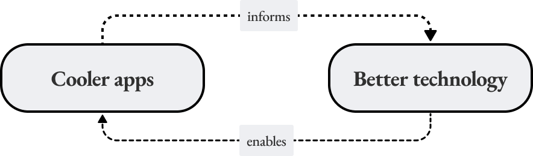

Introducing Personae Labs
identityIntroducing Personae Labs, an R&D lab investigating the future of human expression online. We believe that the availability of advanced cryptography in consumer devices and the rise of public social networks will completely alter the shape of digital society.
Trend 1: publicly verifiable social networks
Traditional digital social networks are not publicly verifiable. There’s no way to make a statement about your relationships in these networks that you know everyone will accept as true.
New, decentralized platforms like Ethereum create room for publicly verifiable social networks. You can make general statements, verifiable and legible to anyone, about your social relationships in Ethereum.
We believe there’s a broader trend here which Ethereum is an early signal of: humans forming ‘bottoms-up’, no middle-man networks online with cryptography.
Trend 2: powerful consumer-available cryptography
The boom of blockchains and other early decentralized systems in the past decade have also hastened the consumer-readiness of powerful cryptography like SNARKs. These technologies allow humans to make ever-more-interesting and nuanced statements about publicly verifiable information.
Of particular interest is the speed at which this technology is becoming widely usable in consumer devices. For example, in the past 3 years, inspired by forward-thinking SNARK-apps like darkforest and tornado.cash, web-based SNARK proving has improved by several orders of magnitude.
SNARKs likely aren’t the only endpoint here. For example, witness encryption, in its most idealized form, could allow a human to encrypt a message that can be decrypted only by a set of humans defined by some predicate of publicly verifiable information.
Given recent speed of progress in SNARKs, we’re excited to push other cryptography to consumer-availability.
Synthesis
What happens when
- most important human relationships are represented in ways that are publicly verifiable and
- humans can make complex cryptographic statements about those relationships on consumer devices
We believe an entirely new spectrum of human expression will find its way online.
The personae a human adopts online will be considerably more colorful than those he/she/they does today.
What we do
Personae Labs operates between two modes:

We do so because we recognize that while the technological landscape (i.e. complexity of making relevant cryptographic proofs on a consumer device) is changing so rapidly, fixing our sights on a product vision given technical limitations today is likely to lead to a local maximum relative to what will be possible in 6mo-1yr.
We take it as a responsibility to push forward on both products and technology. We collectively won’t know what technology to improve without new product experimentation. And we won’t be able to build cooler products without better technology.
Responsibility
We’re principled about what we build.
At the early stages of any new technology, the leverage small teams have on the end state of the tech is outsized. We don’t take this lightly and think deeply about the good and bad outcomes enabled by the personae revolution.
The same technology that frees individuals can harm institutions and although we lean towards freeing individuals, we can’t do our work well without also helping important institutions prepare themselves.
Onwards
We have a number of things in the works and will have more to share soon.
If any of the ideas here resonate with you and you’d like to collaborate, reach out on twitter: https://twitter.com/personae_labs.